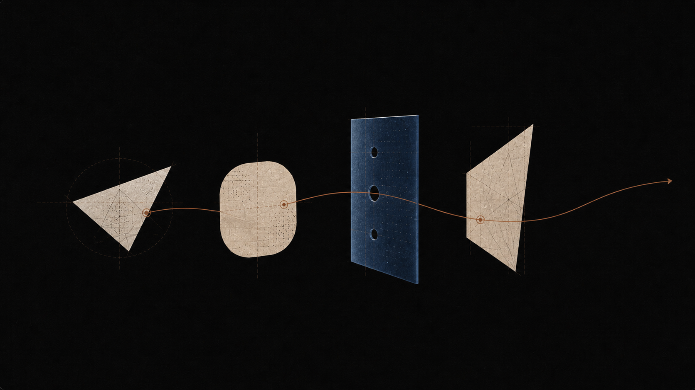

Keep the learner in the work.
Socrates should create room for a person to notice, explain, test, and revise their own understanding.
Explore the learning loopAI can make learning feel faster. Our job is to make it more honest, more legible, and more likely to last.
Socrates should create room for a person to notice, explain, test, and revise their own understanding.
Explore the learning loopA hesitant answer is not a failure state. It is often the clearest signal for what question should come next.
Read the researchUseful learning systems keep enough context to reveal where an idea began and what it now connects to.
See knowledge mapsWhen a tutor is uncertain, it should say so plainly and help a learner examine the assumption rather than cover it up.
Talk with usEvery educational tool changes the distribution of attention. It can turn a hard question into a shortcut, or it can help someone stay with the question long enough for understanding to form.
We build Socrates toward the second possibility: a tutor that is rigorous about evidence, generous with context, and unwilling to confuse a fluent answer with a learned idea.

A working framework
We use these principles to judge product decisions, research directions, and the way a new capability is introduced to a learner.
Read our notes